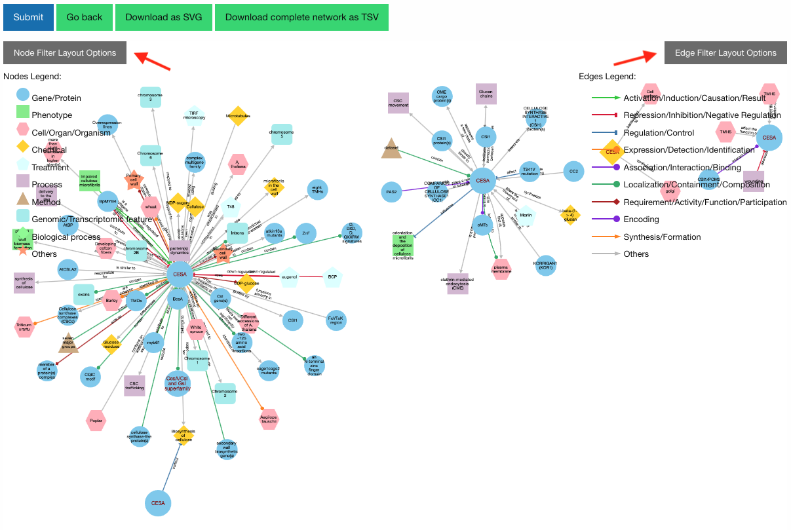
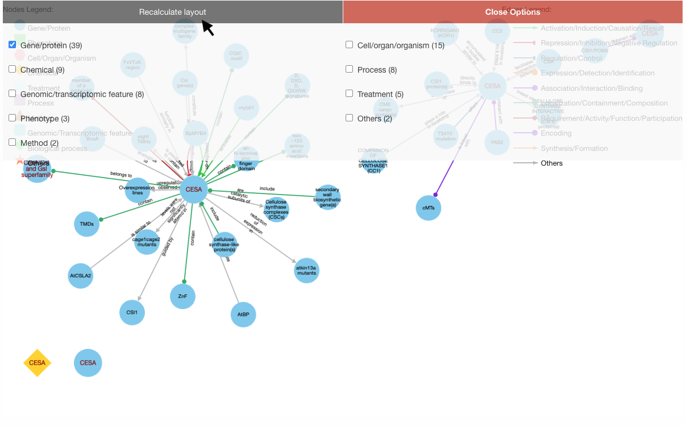
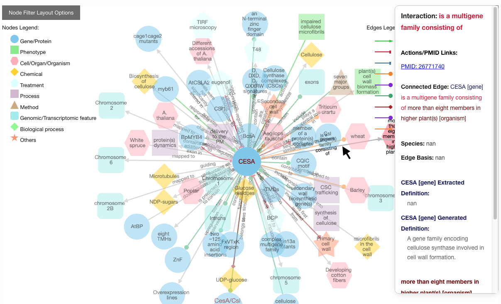
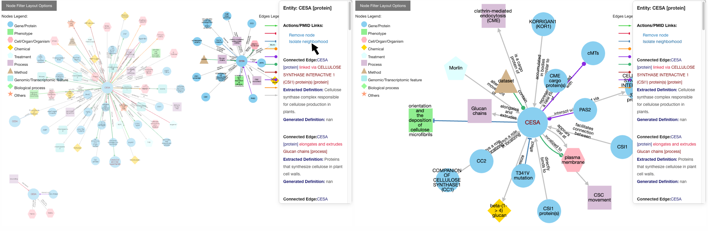
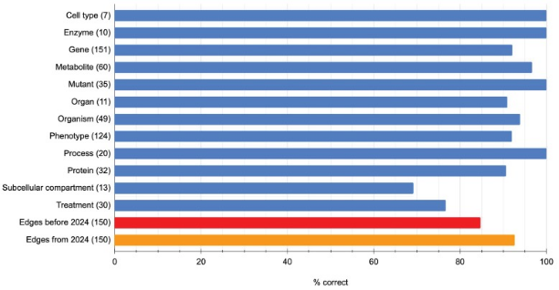
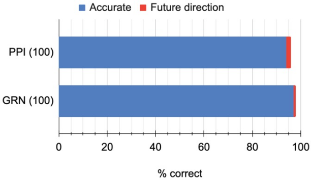

Help / FAQs
General Questions & Answers
-
How was the database constructed?
We used GPT to evaluate research abstracts and identify pairs of entities (e.g., genes, proteins, molecules, compartments, complexes) in addition to their unique interaction type (e.g., enhances, binds, affects, represses).
For instance, after examining the abstract"In plants, regulation of cellulose synthesis is fundamental for morphogenesis and plant growth. Cellulose is synthesized at the plasma membrane, and the orientation of synthesis is guided by cortical microtubules; however, the guiding mechanism is currently unknown. We show that the conditional root elongation pom2 mutants are impaired in cell elongation, fertility, and microtubule-related functions. Map-based cloning of the POM-POM2 locus revealed that it is allelic to CELLULOSE SYNTHASE INTERACTING1 (CSI1). Fluorescently tagged POM2/CSI1s associated with both plasma membrane-located cellulose synthases (CESAs) and post-Golgi CESA-containing compartments. Interestingly, while CESA insertions coincided with cortical microtubules in the pom2/csi1 mutants, the microtubule-defined movement of the CESAs was significantly reduced in the mutant. We propose that POM2/CSI1 provides a scaffold between the CESAs and cortical microtubules that guide cellulose synthesis."
GPT returned the following statements:- Cellulose [molecule]: !synthesized at! Plasma Membrane [cellular component]
- Cortical Microtubules [organelle]: !guide! Cellulose Synthesis [process]
- POM2/CSI1 [gene]: !associates with! CESAs [gene]
- POM2/CSI1 [gene]: !provides scaffold between! CESAs and Cortical Microtubules [biological interaction]
-
How can I search the database?
You can choose to search for terms mentioned in the abstracts/full-texts (for instance, "proline", "cold", "root hair", etc.), author names, or PubMed IDs.
Under term search, you can filter the network by node types first by clicking on the checkbox.
There are also 6 term search options (word, exact, alias, substring, non-alphanumeric and paired-entity). The detailed search instructions are found on the home page. -
Which papers were analyzed?
Papers involve full-texts were obtained from NCBI PubMed, while abstracts were obtained from Elsevier. Search terms involve the model plant Arabidopsis thaliana along with its gene aliases.
 }})
-
How do I use the KnowledgeNetwork viewer?
Our KnowledgeNetwork viewer displays a plethora of relationships found between your search query and GPT-detected entities. Should you want to narrow your search options, click on the "Node Filter Layout Options" or "Edge Filter Layout Options" button:

Then, select your nodes/edges of interest and click "Recalculate Layout":

To learn more about a specific node or edge, click on it:

Users also have the option of personally modifying networks. For example, among the list of possible actions when clicking a node is removing it or isolate neighborhood. Clicking once on the background will restore node opacity.
 -
How can I access the research abstracts from which relationships were identified?
Below the KnowledgeNetwork viewer is a table showcasing the network's nodes and edges. Clicking on the Pubmed ID will display both the research abstract and entities identified from it:
 }})
-
How accurate is GPT in extracting information from the literature?
As with any AI model, GPT is not 100% accurate, generating results that may be erroneous or incomplete. Accordingly, relationships of interest warrant confirmation with the appropriate abstracts / full-texts. To estimate the accuracy rate, we randomly sampled and manually inspected 300 edges, 100 GRNs and 100 PPIs. The results of which are summarized by the following 2 charts:
More than 90% accuracy in entity type classification and above 80% accuracy of edges.
More than 90% accuracy of GRNs and PPIs.